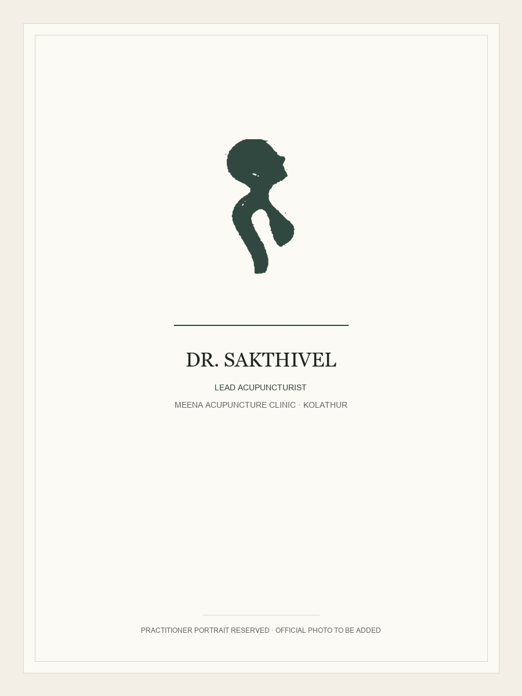
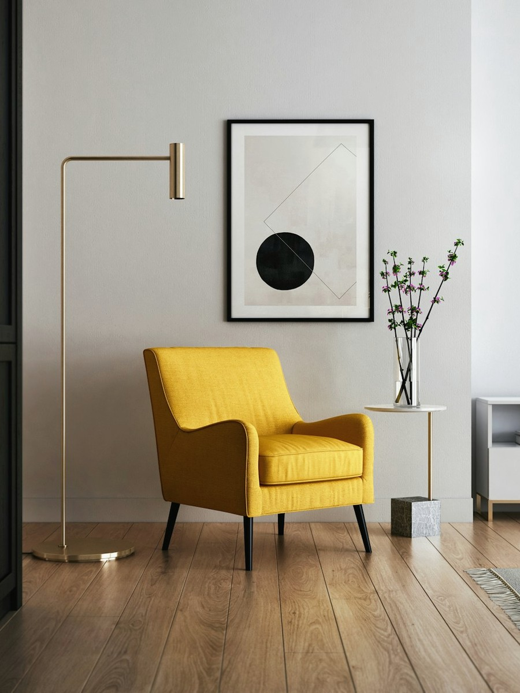
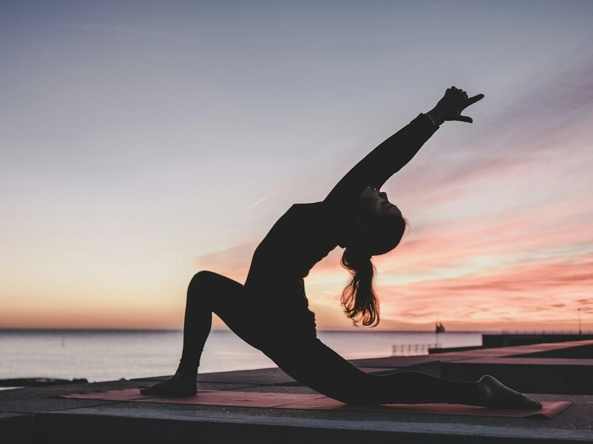

A clinic should feel personal.
So should its care.
Rooted in the neighbourhood, focused on the individual.
Meena Acupuncture Clinic was established to offer Kolathur and North Chennai an alternative to fast-paced, clinical environments where symptoms are catalogued without understanding the person behind them.
Located quietly on the second floor of Platinum Tower along 1st Main Road in Srinivasan Nagar, the clinic was deliberately designed as a calm sanctuary. Here, patients are greeted with warmth, given the time to express their concerns completely, and treated with gentle precision.
In our practice, acupuncture is not treated as a mechanical procedure. Every session begins with careful observation and dialogue. We examine systemic patterns, posture, pulse qualities, and lifestyle factors that influence your physical wellbeing.
This measured attentiveness ensures that each needle is placed with purpose. Whether supporting relief from chronic discomfort or restoring physical vitality, we work collaboratively with you through every phase of treatment and follow-up.
Clinical Leadership & Care

Dr. Sakthivel
Lead Acupuncturist & Family Practitioner · Meena Acupuncture ClinicDr. Sakthivel provides dedicated, patient-centred acupuncture care to families and individuals in Kolathur and North Chennai. Known for his attentive diagnostic approach, traditional pulse evaluation, and kind bedside manner, he works closely with each patient to develop individualised, restorative treatment plans.
How we approach every patient.
Listen first.
Before any needle is placed, we listen to your symptoms, your health journey, and your day-to-day routine without rushing.
Treat individually.
No two individuals share identical constitutional balances; every acupuncture prescription is tailored specifically to your body.
Follow through.
Healing is progressive. We monitor your response across sessions, advise on practical habits, and adjust treatment with your recovery.
A calm environment for healing.
01 · Dedicated private treatment room

02 · Unhurried reception area

03 · Sterile single-use needle preparation